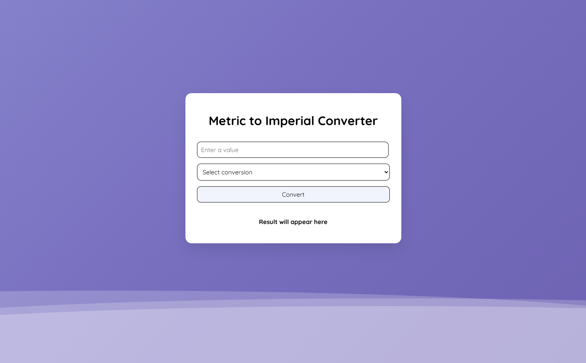

Frontend Dev · Web
Metric–Imperial Converter Web App
A responsive JavaScript web app that converts common metric values to imperial units with dropdown selection, input validation, and clean, readable output.
What I built
A client-side web application designed to convert common metric units into imperial values through a simple, user-friendly interface.
- Supports multiple conversions including temperature, distance, weight, and length
- Features a responsive card-based layout with animated background styling
- Displays formatted results dynamically based on user input
How it works
The application uses JavaScript to capture user input, apply conversion formulas, and update the interface in real time.
- Uses DOM manipulation and event listeners to handle form interactions.
- Applies conditional logic to execute different conversions from a dropdown selection
- Includes input validation and formatted output using Number() and toFixed()
What I learned
This project strengthened my understanding of client-side development and reinforced best practices for building interactive web tools.
- Gained hands-on experience with JavaScript program flow and DOM updates
- Learned the importance of validation for usability and accuracy
- Improved my ability to separate UI design from application logic

Notes / Next Steps
Add optional improvements you’d do next (ex: more units, accessibility tweaks, refactor to modules, etc.).
- Add more conversion categories (temperature, volume, etc.)
- Improve accessibility (labels, focus states, ARIA hints)
- Refactor JS into modules as projects grow